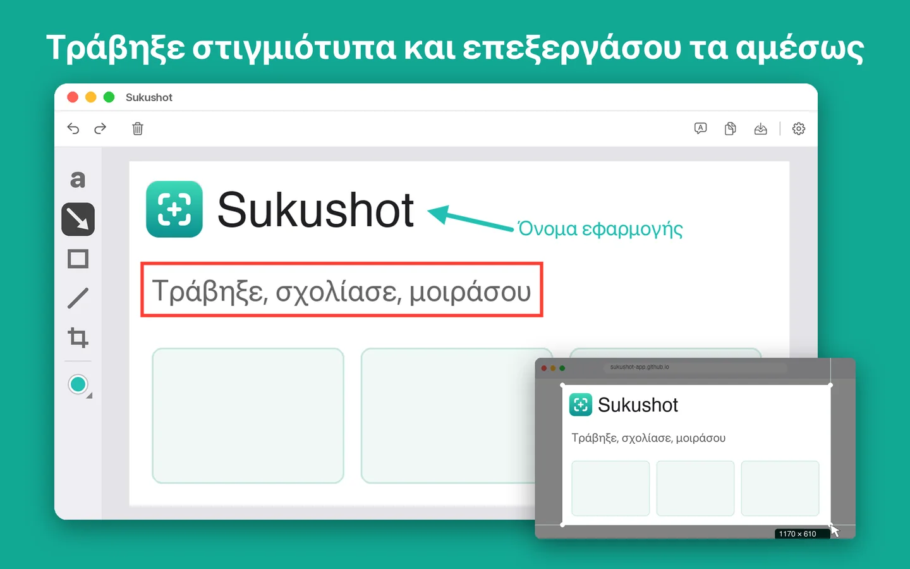

Λήψη
Επιλέξτε περιοχή με οδηγούς σταυρού, χρησιμοποιήστε χρονοδιακόπτη ή τραβήξτε ολόκληρη την οθόνη.
Αποτυπώστε και εγγράψτε την οθόνη από τη γραμμή μενού ή με συντομεύσεις. Προσθέστε βέλη και κείμενο και μεταφράστε το κείμενο. Υποστηρίζει και iPhone ή iPad με καλώδιο.
Λήψη από το Mac App Store
Επιλέξτε περιοχή με οδηγούς σταυρού, χρησιμοποιήστε χρονοδιακόπτη ή τραβήξτε ολόκληρη την οθόνη.
Προσθέστε βέλη, κείμενο, ορθογώνια, ελλείψεις και γραμμές και προσαρμόστε τα επιτόπου.
Μεταφράστε το κείμενο σε ένα στιγμιότυπο και δείτε το πρωτότυπο δίπλα στο αποτέλεσμα.
Εγγράψτε μια περιοχή ή ολόκληρη την οθόνη με ήχο εφαρμογών και κόψτε ό,τι χρειάζεστε.
Εμφανίστε, τραβήξτε και εγγράψτε ένα συνδεδεμένο iPhone ή iPad απευθείας στο Mac.
Αντιγράψτε, αποθηκεύστε ως PNG, JPEG, HEIC, TIFF ή PDF ή σύρετε σε οποιαδήποτε εφαρμογή.